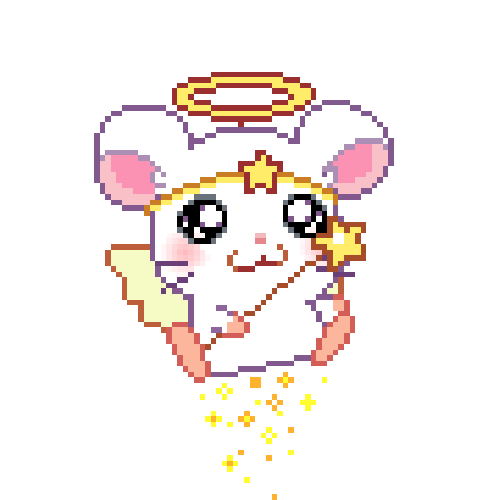
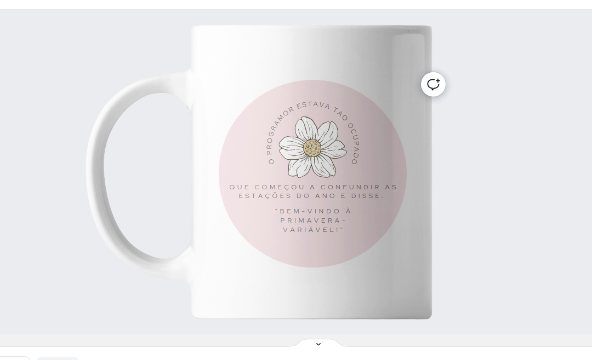
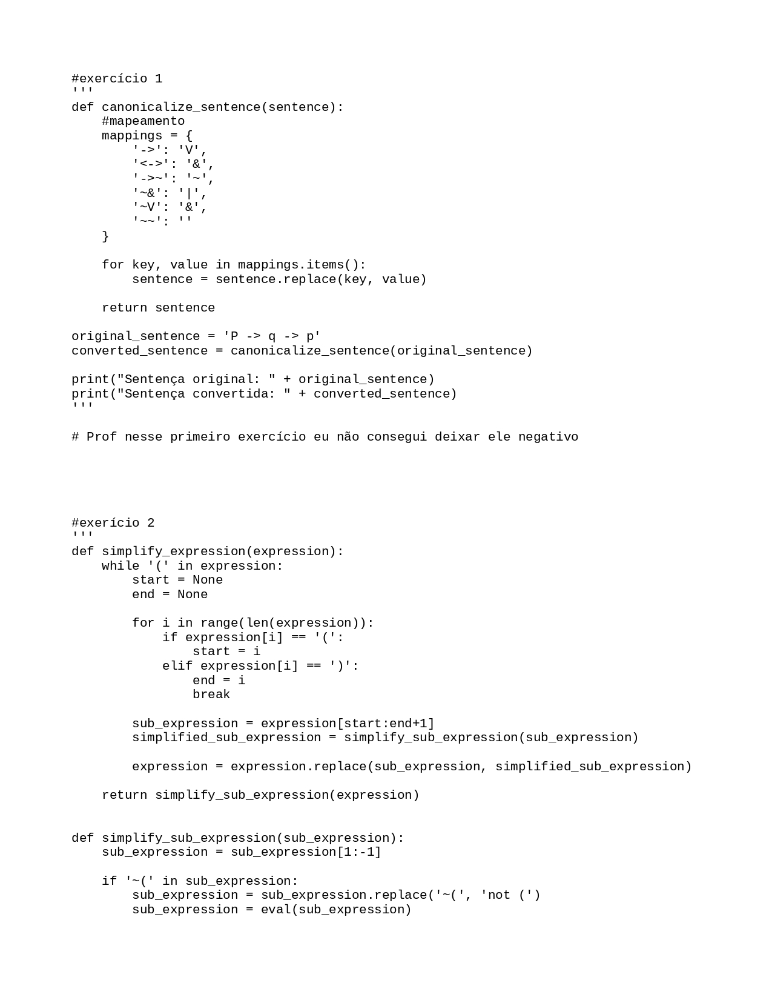
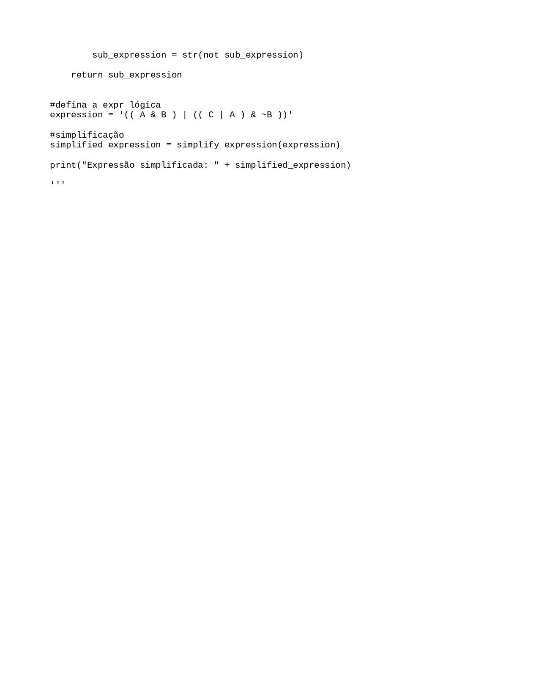
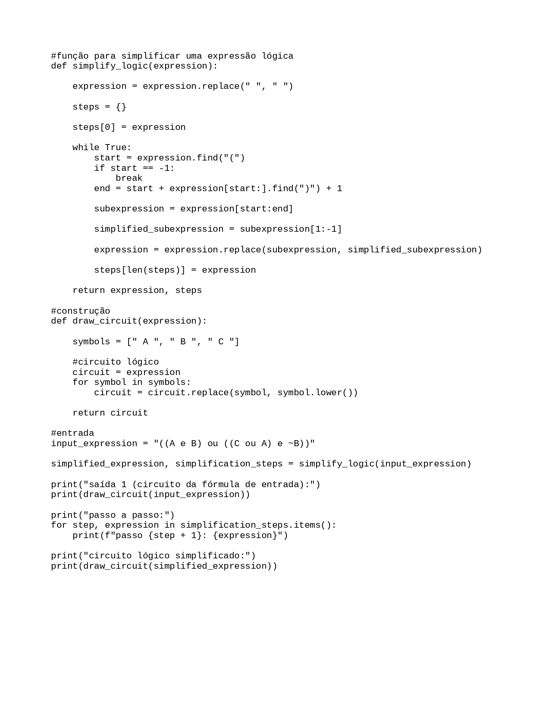

Aluno: Maria Fernanda Gonçalves Cordeiro
Curso: BCC 1 período
Website Pessoal Experiência Criativa
Aqui neste projeto pessoal irei apresentar alguns projetos e trabalhos que tive na trilha acadêmica no primeiro período de Ciência da Computação na Pontifícia Universidade Católica do Paraná:
Filosofia:
Trabalho sobre o primeiro epsódio da série da Netflix 'Olhos que condenam'. O objetivo do trabalho era encrontrar cenas que continham Aletheia, Verita ou Emunah.

Projeto Primaveras Antropológicas, o tema do grupo era Tempo Livre X Workaholic/Studentholic. Fiquei incumbida de criar o design do objeto e documentar sobre os tipos de tempo.
Cyberfisica:
Trabalho colaborativo de criação de arduino, fiquei com a parte de criação de código e descrição de apresentação.
Trabalho colaborativo sobre componentes da CPU, minha parte foi descrever suas funções.
Lógica Matemática:
 
Desafio 1, era necessário criar um programa que convertesse uma sentença original em uma sentença com conectivos canônicos sem simplificações. Tive problemas com esse...

Desafio 2, criar um programa que simplificasse o circuito lógico. Esse eu já tive mais facilidade.
Raciocínio Algoritmo:
Primeira lista de Raciocínio Algoritmo.
Segunda lista.
Experiência Criativa:
Primeiro projeto em grupo, fizemos um jogo de plataforma inspirado em DinoChrome, onde nosso personagens eram aves. Fiquei com a parte dos sprites.
Segundo projeto da matéria, planner com o tema Brasil. Esse projeto foi um dos mais organizados que tivemos.